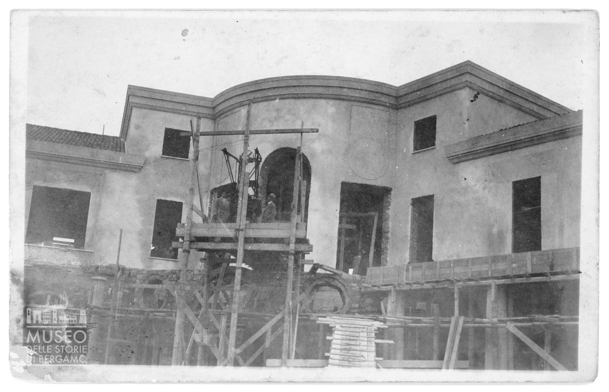

Contesto storico
Ci troviamo di fronte al Liceo Scientifico Statale “Filippo Lussana”, un istituto che ha vissuto diverse fasi storiche, ognuna delle quali ha lasciato il segno sul luogo e sulla sua identità.
L’edificio che oggi ospita il Liceo e che è stato progettato da Alziro Bergonzo (1906-1997) - esponente del razionalismo e figura legata all’architettura del fascismo a Bergamo - fu commissionato per essere sede dell’Opera Nazionale Balilla (ONB) e venne inaugurato il 22 giugno 1932. Negli anni trenta divenne sede della Gioventù Italiana del Littorio (GIL).
Sulla facciata si trova ancora una grande lapide dedicata a Sandro Italico Mussolini; nella parte centrale dell’edificio sono inoltre ancora visibili simboli fascisti in rilievo.
Sandro Italico Mussolini era nipote di Benito Mussolini. Morì a vent’anni per leucemia. La dedica sulla facciata dell’edificio testimonia il forte valore simbolico e politico attribuito a questo luogo dal regime fascista.
Con l’occupazione tedesca, tra il 1943 e il 1945, l’edificio diventa sede degli avanguardisti moschettieri, giovani tra i 15 e i 18 anni inquadrati nella Guardia Nazionale Repubblicana. Pur essendo giovanissimi, vengono impiegati anche in attività antipartigiane.
I locali del seminterrato conservano ancora scritte che rimandano ai diversi usi del tempo: prima spogliatoi, poi luogo di detenzione e tortura, poi deposito di materiali.
Nel dopoguerra l’edificio diventa sede dell’Istituto Magistrale “Paolina Secco Suardo” e dal 1968 del Liceo Scientifico Statale “Filippo Lussana”.
La Riforma Gentile, dall'omonimo ministro dell'istruzione Giovanni Gentile, entrò in vigore nel 1923, poco dopo la marcia su Roma. Essa rappresenta una visione centralista e selettiva dell'istruzione, al cui vertice ci sono i licei, classico in primis, destinati a formare le classi dirigenti e le élite culturali. Nettamente distinti, c'era poi l'istruzione tecnica e professionale, destinata alle classi subalterne. Viene introdotto l’insegnamento obbligatorio della religione nelle elementari.
🎧 Audio Lettura
Perché è un luogo della memoria
Questo edificio oggi è una scuola pubblica, ma conserva ancora tracce evidenti del suo passato. Destinare oggi un edificio come questo, che era stato costruito per l'inquadramento dei giovani, rappresenta una scelta significativa.
Camminare in questi spazi significa quindi confrontarsi con una memoria complessa: quella di un luogo nato per l’inquadramento ideologico della gioventù e poi trasformato in sede di istruzione repubblicana. La sua storia invita a riflettere su come l’educazione possa essere usata tanto per emancipare quanto per assoggettare. Non dobbiamo dimenticare che prima ancora della creazione dell'Opera Nazionale Balilla il controllo dei giovani fu perseguito atraverso la riforma Gentile del 1923.
🎧 Audio Lettura
Contenuti multimediali


Approfondimento: ONB, GIL e controllo della gioventù
L'Opera Nazionale Balilla (ONB) e, successivamente, la Gioventù Italiana del Littorio (GIL) sono strumenti fondamentali del progetto educativo fascista. Queste organizzazioni affiancano la scuola e mirano all’educazione fisica, morale e politica dei giovani.
Tutti i giovani dai 6 ai 18 anni vengono inquadrati in organizzazioni differenziate per età e genere.
Per i maschi:
- Figli della lupa dai 6 agli 8 anni
- Balilla dagli 8 ai 14 anni
- Avanguardisti dai 14 ai 18 anni
Per le femmine:
- Figlie della lupa dai 6 agli 8 anni
- Piccole italiane dagli 8 ai 14 anni
- Giovani italiane dai 16 ai 18 anni
Per i ragazzi le attività sono in gran parte preparatorie al servizio militare; per le ragazze il regime prevede attività legate a sfilate e manifestazioni pubbliche, nel rispetto del modello tradizionale femminile imposto dal fascismo.
Tutti partecipano al sabato fascista, che prevede lezioni di dottrina fascista e attività ginniche. Il controllo del regime, però, non si limita alla scuola: coinvolge anche il tempo libero, così da occupare l’intera vita dei giovani.
In questo sistema rientrano anche altre organizzazioni e attività del tempo libero, pensate per estendere il controllo del regime oltre l’ambiente scolastico.
Il controllo fascista sulla gioventù e sulla società si estende anche oltre la scuola attraverso:
- Gruppi Universitari Fascisti (GUF) per gli studenti universitari
- Colonie estive, organizzate secondo modelli di tipo militare
- Dopolavoro Nazionale, che propone svaghi e attività per i lavoratori
In questo modo la distinzione tra scuola, tempo libero e vita privata tende a scomparire.
Nel 1939 viene introdotto anche il servizio premilitare, che rafforza ulteriormente la preparazione militare dei giovani.
Nel 1939 ha inizio il servizio premilitare dei giovani, con l’obbligo di presentarsi ogni sabato pomeriggio ai rispettivi gruppi rionali. Questo passaggio mostra in modo esplicito come l’educazione fascista fosse strettamente collegata alla militarizzazione della gioventù.
Il progetto educativo fascista entra presto in conflitto con la Chiesa cattolica, che dispone di una propria rete di associazioni giovanili. Nel 1928 il regime scioglie le organizzazioni giovanili non fasciste, tra cui le associazioni scout; dall’inizio degli anni Trenta l’unica associazione rimasta attiva è l’Azione Cattolica, che deve però limitare la propria attività al solo ambito catechistico.
L’Azione Cattolica Italiana è la sola organizzazione che potè operare durante il fascismo in virtù dei Patti Lateranensi. Durante il fascismo rimase formalmente attiva, ma la sua presenza nel campo educativo e giovanile fu fortemente limitata: il regime le consentì di operare soltanto nell’ambito religioso e catechistico, così da evitare concorrenti nel controllo della formazione dei giovani.
Complessivamente, il progetto educativo fascista non mira a formare cittadini capaci di scelte personali e consapevoli dei propri diritti e doveri, ma a creare un “fascista”: disciplinato, obbediente, fisicamente forte e fedele alla patria e alla famiglia secondo la retorica del regime.
🎧 Audio Lettura
Fonti
Fonti Bibliografiche
- Mario Pelliccioli, Itinerari di memoria: un percorso a Bergamo tra fascismo, occupazione tedesca e Resistenza, i Libri di Moltefedi, Bergamo 2023.
- Guya Bertelli, Manuela Brambilla, Matteo Invernizzi, Bergamo: cent'anni di architettura 1890-1990, Alcon, Bergamo 1994.
Fonti Multimediali
- Immagine 1: Archivio fotografico del progetto, classe 5IG Itis P. Paleocapa
- Immagine 2: Pietro Gentili, Bergamo edificio in costruzione, Fondo Pietro e Achille Gentili, Museo delle storie di Bergamo, Archivio fotografico Sestini